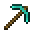

This chunk was never generated
The page you are looking for does not exist. Here is where you can go instead.
Did you mean...
Join >
Mine the blocks, or step into the portal for a random page
The page you are looking for does not exist. Here is where you can go instead.
